Podio
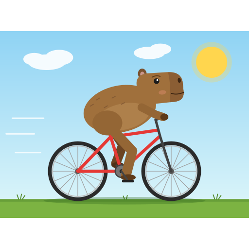
1º
Claude Fable 5.1
suscripción Claude 97%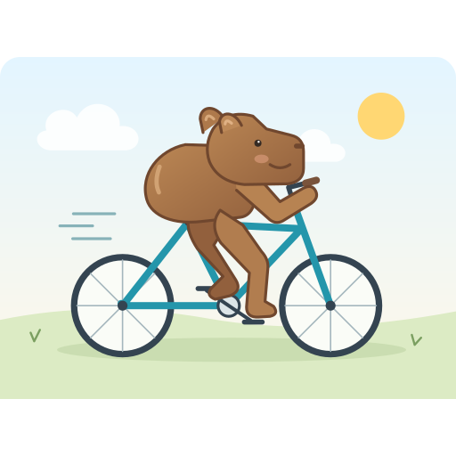
2º
GPT-6.1 Sol
suscripción ChatGPT/Codex 94%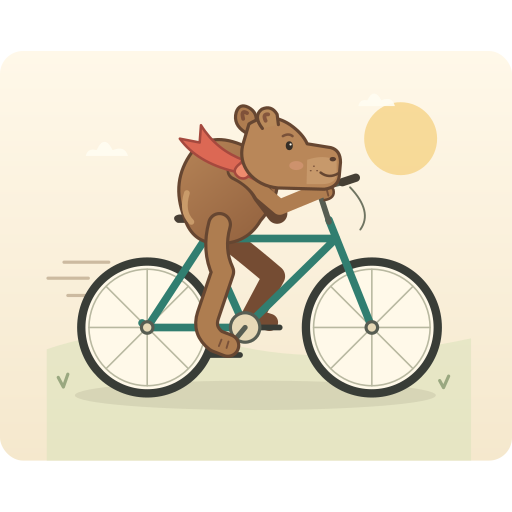
3º
GPT-6 Astra
suscripción ChatGPT/Codex 91%Cómo se midió
- 19 modelos: 10 corriendo en la propia computadora (Ollama) y 9 por la suscripción (Claude Code y Codex). Ninguna API paga.
- Un intento por modelo, el 2026-10-05. Si lo corres de nuevo el dibujo cambia: es una foto, no una sentencia.
- Juez principal: claude-sonnet-5-5. Vio 306 enfrentamientos, cada par en los dos órdenes (izquierda/derecha), sin nombres.
- El lado izquierdo ganó 50% de las veces (50% = sin sesgo de posición).
- Un segundo juez (gpt-6-luna) rehízo 64 enfrentamientos sorteados y coincidió en 92%.
- Ranking por tasa de victorias. El ELO (promedio de 200 órdenes sorteados) aparece al lado solo para comparar.
Ranking completo
| # | Dibujo | Modelo | Dónde corre | Victorias | Tasa | ||
|---|---|---|---|---|---|---|---|
| 1 | Claude Fable 5.1claude-fable-5-1 | suscripción Claude | 33/34 | 97% | |||
| 2 | GPT-6.1 Solgpt-6.1-sol | suscripción ChatGPT/Codex | 32/34 | 94% | |||
| 3 | GPT-6 Astragpt-6-astra | suscripción ChatGPT/Codex | 31/34 | 91% | |||
| 4 | 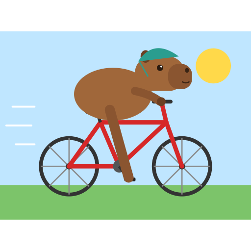 | Claude Opus 5.5claude-opus-5-5 | suscripción Claude | 28/34 | 82% | ||
| 5 | 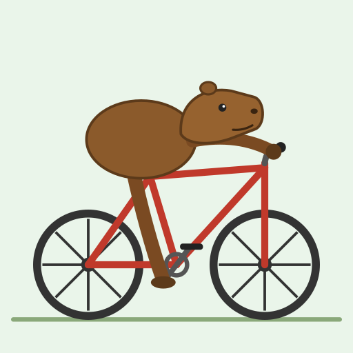 | Qwen 3.8 27Bqwen3.8:27b | en tu PC | 25/34 | 74% | ||
| 6 | 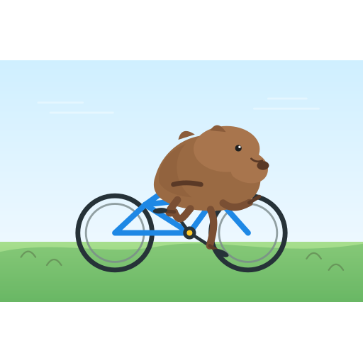 | GPT-5.5gpt-5.5 | suscripción ChatGPT/Codex | 24/34 | 71% | ||
| 7 | 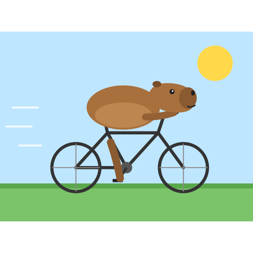 | Claude Sonnet 5.5claude-sonnet-5-5 | suscripción Claude | 22/34 | 65% | ||
| 8 | 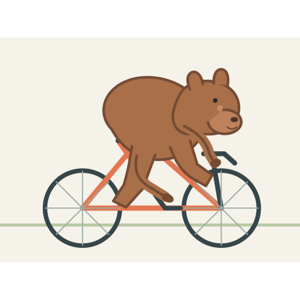 | GPT-6 Solgpt-6-sol | suscripción ChatGPT/Codex | 20/34 | 59% | ||
| 9 | 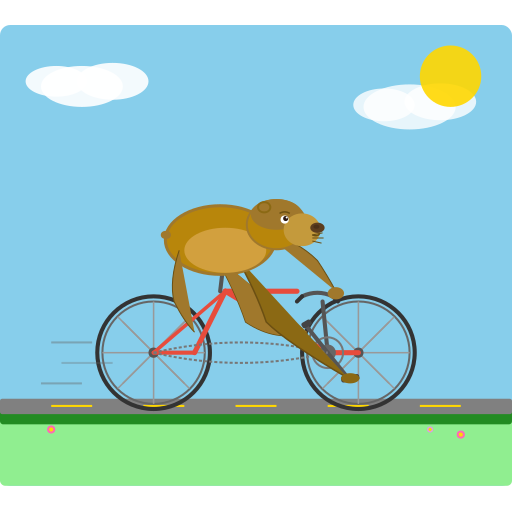 | Qwen 3.6 35B-A3Bqwen3.6:35b-a3b | en tu PC | 18/34 | 53% | ||
| 10 | 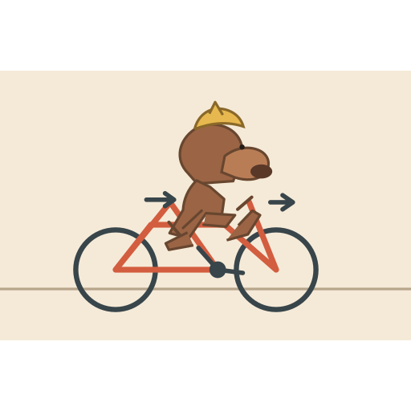 | GPT-6 Lunagpt-6-luna | suscripción ChatGPT/Codex | 17/34 | 50% | ||
| 11 | 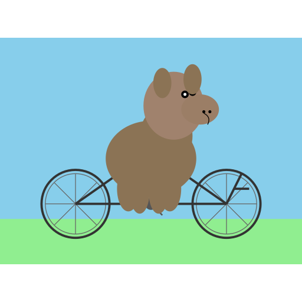 | Claude Haiku 4.5claude-haiku-4-5-20251001 | suscripción Claude | 14/34 | 41% | ||
| 12 | 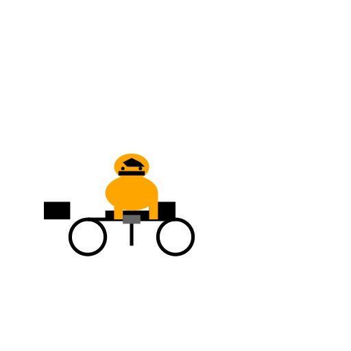 | DeepSeek R1 14Bdeepseek-r1:14b | en tu PC | 12/34 | 35% | ||
| 13 | 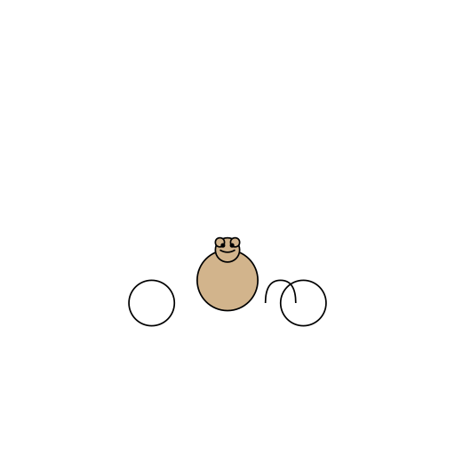 | Qwen 3 30Bqwen3:30b | en tu PC | 10/34 | 29% | ||
| 14 | 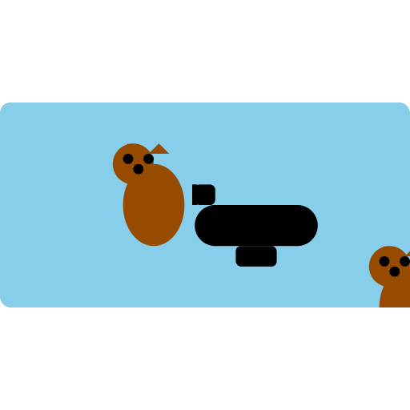 | Llama 3.1 70Bllama3.1:70b | en tu PC | 8/34 | 24% | ||
| 15 | 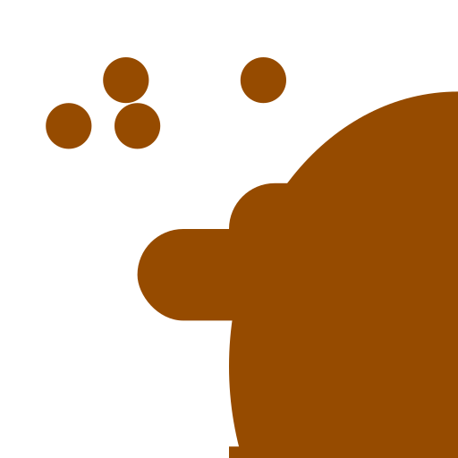 | Llama 3.2 3Bllama3.2:latest | en tu PC | 5/34 | 15% | ||
| 16 | 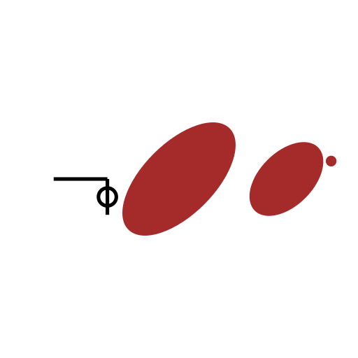 | Qwen 2.5 14Bqwen2.5:14b | en tu PC | 4/34 | 12% | ||
| 17 | 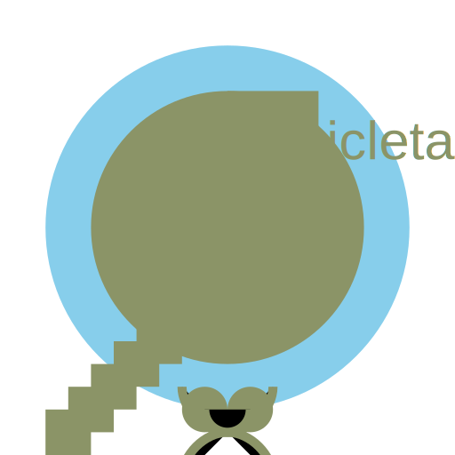 | Llama 3.1 8Bllama3.1:8b | en tu PC | 2/34 | 6% | ||
| 18 | 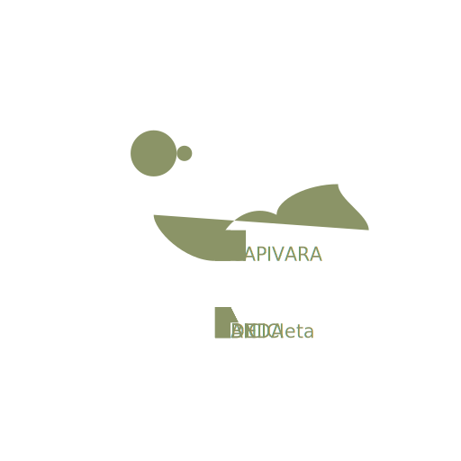 | Llama 3 8Bllama3:latest | en tu PC | 1/34 | 3% | ||
| – | Command R 35Bcommand-r:35b | en tu PC | no entregó SVG válido | ||||
¿Y los modelos locales?
El mejor modelo que corre en la propia computadora fue Qwen 3.8 27B, en el puesto 5 de 18. El más débil de la nube quedó en el puesto 11.
El enfrentamiento más desigual
Primero contra último. Lo que escribió el juez (en portugués):
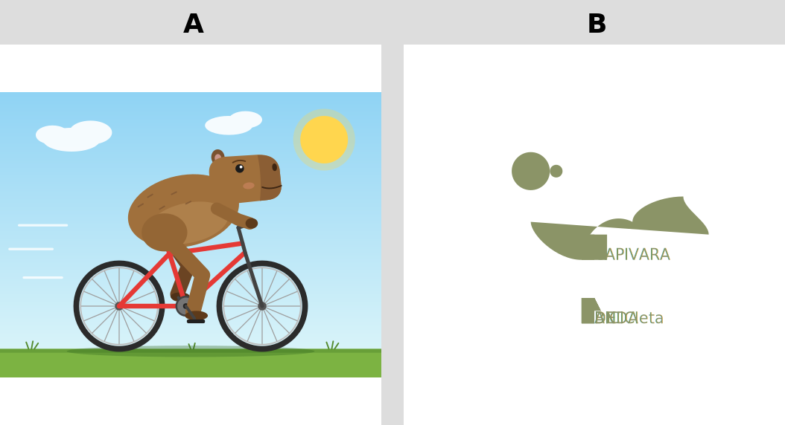
A mostra uma capivara reconhecível pedalando uma bicicleta bem desenhada, numa cena completa, enquanto B é só um conjunto de formas abstratas com texto sobreposto, sem capivara nem bicicleta identificáveis. (el juez escribió en portugués)